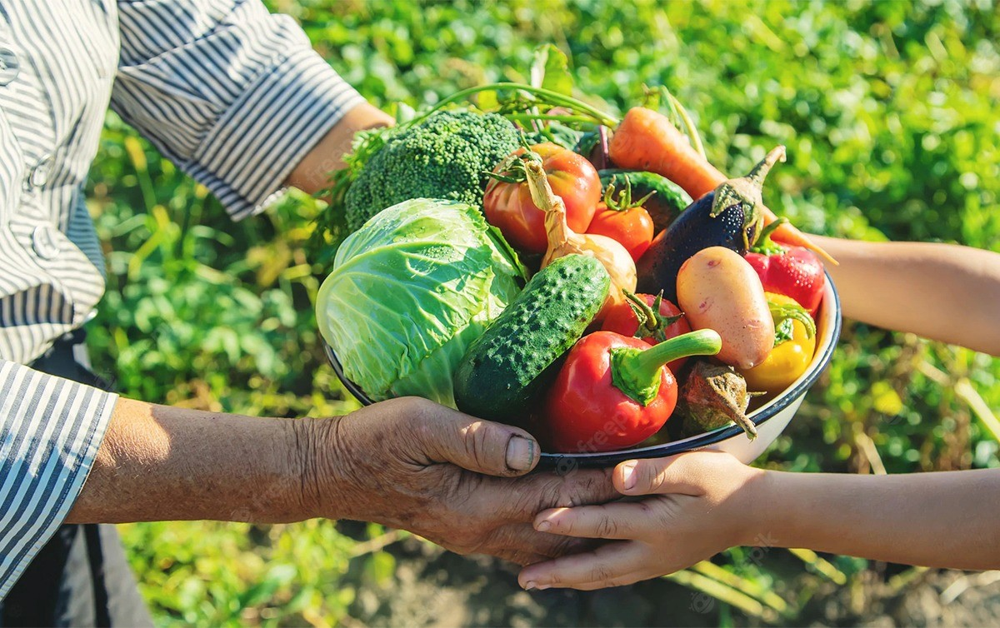
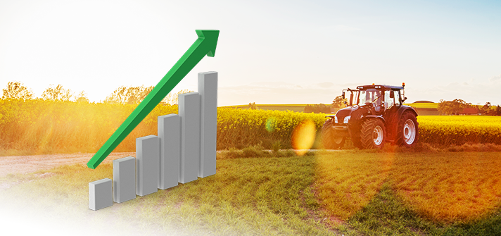

Do campo a cidade colhendo oportunidades
Plantando sonhos, colhendo esperança e alimentando o futuro
A agricultura é de extrema importância para toda a sociedade, pois é através dela que se produzem os alimentos, sendo a base da economia mundial. A agricultura ainda contribui para a erradicação da pobreza, abre portas de trabalho descente e estimula a economia. Também contribui para a saúde e o bem-estar, uma vez que entre os produtos agrícolas estão grãos, hortaliças, legumes e frutas.

A economia agrícola representa cerca de R$100 bilhões das exportações do Brasil, sendo que a venda do setor agropecuário se destacou com o crescimento de 25,3% das exportações no ano para o Produto Interno Bruto (PIB), de acordo com o Instituto Brasileiro de Economia da Fundação Getúlio Vargas (Ibre/FGV).
